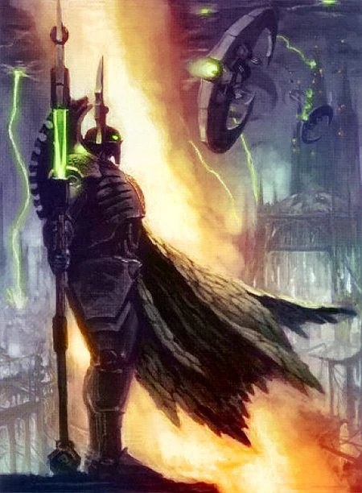

Imotekh the Stormlord
| Imotekh the Stormlord | |
|---|---|
| Phaeron of the Sautekh Dynasty | |
 Imotekh with the Staff of the Destroyer, from an Ordo Xenos plate Artwork © Games Workshop | |
| Phaeron of the Sautekh Dynasty | |
| Reign | 781.M41 – present |
| Predecessor | Unnamed phaeron of Mandragora (lost in the Great Sleep) |
| Successor | Incumbent |
| Former rank | Nemesor (general) of the Sautekh |
| Woken | c. 770s.M41, on Mandragora (estimated) |
| Status | Active in the Era Indomitus |
| Crownworld | Mandragora |
| Realm | About eighty tomb worlds (late M41) |
| Advisers | Orikan the Diviner; Nemesor Zahndrekh of Gidrim |
| Wargear | Staff of the Destroyer; Gauntlet of Fire; phylactery; Bloodswarm nanoscarabs; the tombship Inevitable Conqueror |
| Known for | The fall of Hypnoth (911.M41); Schrödinger VII (930.M41); the Absorption Wars; defiance of Szarekh |
Imotekh the Stormlord is the phaeron of the Sautekh Dynasty of the Necrons, ruler of the crownworld Mandragora, and by the judgement of the Ordo Xenos the most able Necron commander of the late 41st and early 42nd millennia. A general of the Sautekh before the Great Sleep, he woke to find his crownworld in civil war, ended it by force and took the throne in 781.M41. He then began a conquest that by the end of the century had brought some eighty tomb worlds under his rule.[1]
Imotekh's campaigns against the Imperium took the forge world Hypnoth in 911.M41 and many other worlds. He is named for the green storms that cover his armies' advance. In the Era Indomitus he has refused to bow to the returned Silent King, Szarekh, and has fought a civil war against the dynasties loyal to him while absorbing newly woken tomb worlds into his own realm.[1][2]
Rise
[edit]Before biotransference Imotekh was a nemesor, a general, of the Sautekh, and he was famed as a strategist. Mandragora survived the Great Sleep largely intact, but its phaeron was one of the few nobles who did not wake. The lesser lords fought each other for the throne for about a decade and kept the higher nobles asleep to avoid rivals. One pretender woke Imotekh to win him to his side. Imotekh instead raised his own army, destroyed the claimants, and in 781.M41 was crowned phaeron. He forbade any further infighting in his realm and enforced the ban with executions.[1][a]
Campaigns
[edit]The Stormlord's first known victory was over the Aeldari of Alaitoc at Somonor in 798.M41, where he drew the overconfident Farseer Eldorath Starbane into a trap in the depths of a tomb and destroyed his warhost. He turned against the Imperium in the following century.[1]
In 910.M41 his advance was held for months at the forge world Hypnoth, which was reinforced by the Astra Militarum and the Adeptus Astartes. Guided by the prophecies of his astromancer Orikan the Diviner, Imotekh broke the deadlock by striking its supply worlds, and in 911.M41 his Crypteks infected Hypnoth's defences with a mechanophage. The world fell within days despite the defence of the Flesh Tearers and the Iron Hands.[1]
In 930.M41 he struck the ice world Schrödinger VII. A Black Templars crusade under Marshal Helbrecht answered the planet's distress call, and Imotekh defeated it. Helbrecht swore an oath of vengeance, and in 985.M41 caught Imotekh's flagship, the tombship Inevitable Conqueror, near the Sautekh coreworld of Davatas and destroyed it; Imotekh himself escaped. In 988.M41 the Space Wolves under Logan Grimnar broke his phalanxes on Vhaloth IV.[1][3]
Era Indomitus
[edit]After the opening of the Great Rift in 999.M41, many more tomb worlds woke. Imotekh began the Absorption Wars to bring them under the Sautekh before the Silent King's authority could claim them. When Szarekh called on the dynasties to unite under him, Imotekh refused. Imperial reports from the Pariah Nexus describe the Sautekh seizing whole systems and fighting the dynasties loyal to the Silent King, and the civil war has at times given Imperial forces in the region a reprieve.[2][4]
Character
[edit]Imotekh plans his wars across whole sectors, with feints, reserves and contingencies that come into play by themselves when certain conditions are met. He uses terror as a weapon: his armies advance under storms of green lightning that cut enemy forces off from each other, and survivors are marked with Bloodswarm nanoscarabs that draw packs of Flayed Ones to them. He holds the Orks in particular contempt, because their lack of logic makes them the one enemy whose moves he cannot predict. His only rival in the dynasty is the old and eccentric Nemesor Zahndrekh, whose loyalty is not in doubt.[1]
Timeline
[edit]| Date | Event |
|---|---|
| c. 770s.M41 (estimated) | Woken during the Mandragoran civil war |
| 781.M41 | Crowned phaeron of the Sautekh |
| 798.M41 | Destroys an Alaitoc warhost at Somonor |
| 910–911.M41 | Siege and fall of the forge world Hypnoth |
| 930.M41 | Defeats the Black Templars at Schrödinger VII |
| 985.M41 | Loses the Inevitable Conqueror to Helbrecht at Davatas |
| 988.M41 | Defeated by the Space Wolves on Vhaloth IV |
| Early M42 | The Absorption Wars; war against the Silent King's dynasties |
See also
[edit]
Notes
[edit]- ^ The year of Imotekh's waking is not recorded. It is estimated from the account of a civil war of about ten years ending in his coronation in 781.M41.
References
[edit]- ^ a b c d e f g Champions of Fenris - A Codex: Space Marines Supplement (7th Edition) (Digital Edition), pg. 88. Games Workshop.
- ^ a b Codex: Necrons (7th Edition) (Digital Edition), pp. 51, 183-184. Games Workshop.
- ^ Codex: Necrons (5th Edition), pp. 17, 21-24, 26-27, 55, 81-82, 88. Games Workshop.
- ^ Warhammer 40,000 - Index Astartes: Centurions, "Famous Battles of the Centurions".